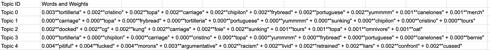

How does cuisine impact language used for reviews?
A cultural analysis by Ryan Lin and Noah Lian
Setup: Hypothesis and Goals
Our research will investigate how cuisine influences the type of adjectives and words that consumers use across four different cuisines: Chinese, American, Mexican, and Japanese . Our project has centered around the question of customers' expectations about various food cuisines. We ask the question:
How does cuisine impact the adjectives used for reviews?
Before we obtained the results, we hypothesized that because of consumer expectations, racial stereotypes will be reflected in both positive and negative Yelp reviews . This would arise with adjectives being used to describe the cleanliness of businesses (where typical Chinese and Mexican businesses are less appealing to Americans than Japanese ones, for example), cost, taste of food, and staff behavior.
Code to this presentation and results can be found on Github and data at Yelp Open Dataset
Dataset Used: Yelp Open Dataset
Using Yelp as our main dataset for customer reviews in restaurants all over the country, we grouped restaurants with more than ten reviews into four separate categories: American, Chinese, Mexican, and Japanese restaurants. All other samples that did not fit in any of these categories were discarded. Despite cutting out restaurants that did not fit our criteria, we still wound up with a huge sample: 590,000 reviews for American restaurants, 52,000 for Chinese restaurants, 126,000 for Mexican restaurants, and 39,000 for Japanese restaurants, amounting to more than 800,000 reviews.
We used three main methods of analysis:
- Topic Modeling
- Top Adjectives
- TF-IDF Scores
Below are two examples of data given by yelp, the left shows business.json and the right shows review.json


Analysis 1: Topic Modeling
Our first method of analysis was topic modeling. Using natural language tool it, we first processed out stop words and filtered the data. Next we used Gensim's LDA (Latent Direchlet Allocation) model to do topic modeling. An LDA is a supervised machine learning model that allows us to extract popular topics from a given corpus.
As we were obtaining the data, we discovered that the way in which we grouped our documents to create a corpus had a strong impact on the results of the model. We tried various groupings of documents, specifically grouping by review, rating, restaurant, and combinations of each, obtaining a different set of results each time we submitted the data. Despite obtaining a variety of varying results, we couldn’t find any extremely significant patterns. The most interesting result, however, came about by grouping documents by the rating in each cusine. Below you can see two examples of outputs of the topic model when grouping documents by review rating. The number associated represent the weight of the word.
Japanese Reviews
Mexican Reviews
Much of the results was filled with neutral words such as “burger” or “tacos” or slang and foreign language words like “chipilon” and “messikin.” We wanted to focus on the adjectives, and cleaned out all the unnecessary clutter before running the data through again, but you can see some promising results in these. For example, Topic 0 in Japanese reviews talks about cockroaches and puke. Additionally the Topic 4 in Mexican reviews discusses racism, liars, and livid. Ideally, we would be able to attribute specific words that are used to describe specific cuisines. Below, we show results for topic modeling Chinese and American cuisines.
Chinese Reviews

American Reviews

In the Chinese and American reviews, you can see interesting negative topics as well. For example, Topic 4 about Chinese cuisine demonstrates negativity about service and location calling restaraunts rude, disrespected, and moldy. Notably, for some reason there seems to be alot of out of place words such as metropolitan, fox, or reuban. There seems to be a theme of cockroaches and puke for both Chinese and Japanese cuisine. The American topic modeling is questionable as there seems to be many non-words or non-English words, but Topic 4 is interesting in that it explores negative words such as abusing, racists, and pba. Funny enough, beer and racists definetly represents an American stereotype! Furthermore, calling Asian restaruants and food dirty is a common stereotype as well. Although the data has some interesting points, we thought topic modeling did not show enough decisive and clear trends. Therefore, we tried another type of analysis: top adjective counts.
Analysis 2: Top Adjectives
Top adjectives is simple, we just searched for the top used adjectives in each rating category.
We decide to search for all top adjectives, but at first when running this, we got "good" as the overwhelmingly top used adjectives for every rating across almost every cuisine. Therefore we decided to manually filter out non-descriptive words such as good, great, nice, much ...
In our analysis of Top Adjectives results, we observed intriguing patterns in how customers mentioned the cuisine of restaurants in their reviews. The term 'Chinese' emerged as the most frequently used descriptor for food and service across all five ratings for Chinese restaurants, except in 5-star reviews where 'Chinese' was the second most common term, with 'Delicious' taking the top spot. Similarly, Mexican restaurants followed a comparable trend, with 'Mexican' either being the most or second most utilized term in customer reviews across all ratings.
Chinese Top Adjectives


Reviews of Japanese restaurants frequently included the term 'Japanese' among the top 10 most used words across various ratings. Conversely, terms like "American" or "Western" were not prevalent descriptors for American cuisine in the reviews. Given that most of our sample was from American restaurants, it suggests that such terms may be considered redundant since Western and American food are often perceived as the norm in this context. However, this observation also underscores the phenomenon of 'othering' when discussing cuisines from cultures outside of America. Our next step involves collecting data on European cuisines to explore potential differences in customer reviews and further understand how different culinary backgrounds are perceived and described in restaurant feedback.
Another pattern we noticed from the Top Adjectives results is that, of all the various elements of a restaurant, the taste of the food seems to be the most important. Terms such as ‘delicious’ and ‘fresh’ were constantly used throughout all cuisines and all ratings, which was surprising to us. We imagined terms describing the restaurants’ cleanliness and customer service to be as frequent as terms describing the food. Admittedly, customer service is mentioned quite a bit, especially in the more extreme reviews (1 and 5-star ratings) with terms such as “rude” and “friendly,” but food was mentioned 2-4 times more than the other factors.
Mexican Top Adjectives


Not all graphs were included for brevity.
Top Adjectives again did not get enough descriptive words that we were searching for to confirm stereotype and biases in reviews, so we tried TF-IDF analysis.
Analysis 3: TF-IDF Analysis
TF-IDF analysis is a way of measuring the significance of each word by its TF (Term frequency) and IDF (Inverse Document Frequency) score. This method of analysis adjusts for the fact that some words appear more frequent than others.
TFIDF on Japanese and American Cuisines
1 Star Rating:


5 Star Rating:


Conclusion
Although our initial data did not show any promising pattern, we seem to be heading in the right direction. With further cleaning and optimisation of the groupings, we will be able to find useful data for our project.